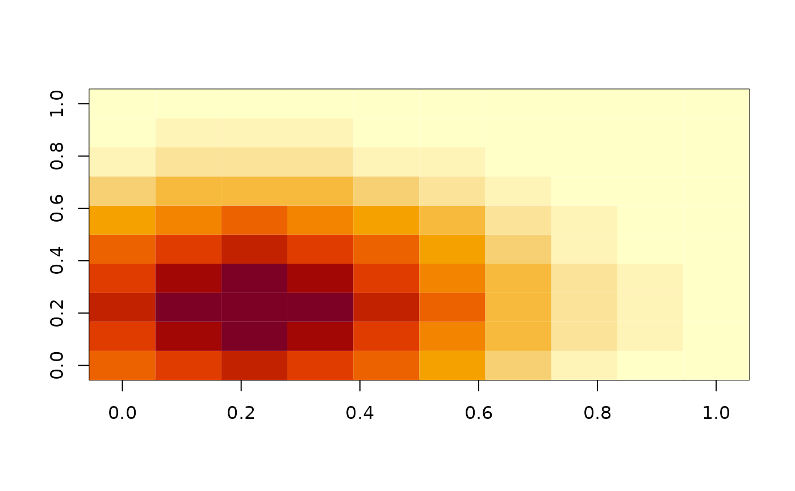
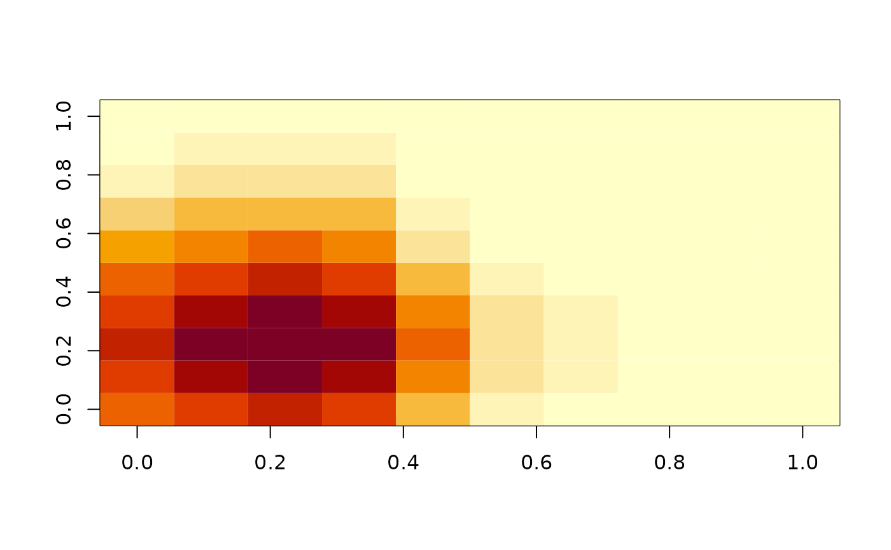
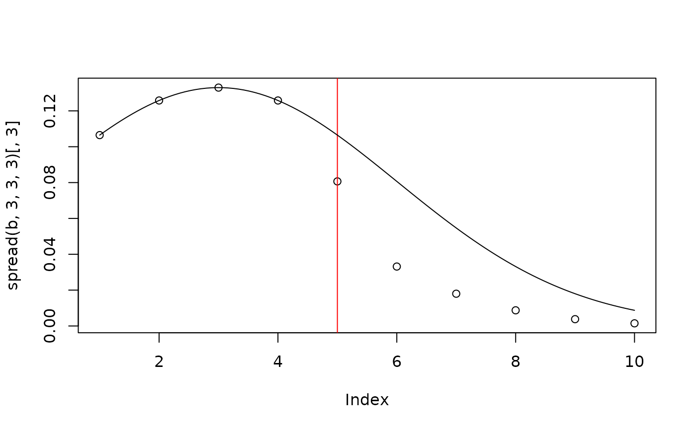

Calculate a Gaussian resistant kernel
Usage
spread(x, ...)
# S3 method for matrix
spread(
x,
row,
col,
sd,
cellsize = 1,
sd_threshold = 3,
square = FALSE,
symmetrical = TRUE,
...
)Arguments
- x
a matrix of resistance values all >=1
- ...
Arguments to be passed to other methods.
- row
the focal row of the spread
- col
the focal column of the spread
- sd
the standard deviation of the Gaussian function in cost length (resistance * physical distance). The resulting spread will be equivalent a Gaussian kernel with this standard deviation when applied to a minimally resistant surface: resistance of 1 for all cells.
- cellsize
the size of each cell in physical units, typically meters.
- sd_threshold
the number of standard deviations beyond which the height of the surface is not calculated
- square
if
TRUEthen the diagonal cells will be considered to be one cell length away from the center and the spread will tend to be square. The default ofFALSEuses a diagonal length of 1.4 cells and spreads tend to be octagonal.- symmetrical
If
TRUEthen the average resistance of the source and neighboring destination cell is used to represent the cost of stepping to a neighboring cell. IfFALSEthen the destination cell is used to represent the cost of the step. The original 2009 algorithm is equivalent toFALSE. IfTRUEthen the cost difference between a source and any (not necessarily adjacent) destination will be the same as the cost distance from that destination to the source, and both will include half the cost of traversing the source and destination cells. IfFALSEthat is not guaranteed as the source cell cost is not included and the full destination cell cost is.
Value
a matrix with the same dimensions as x but representing a
Gaussian spread from the focal cell.
Note
The height of the kernel returned is dependent on the sd and is the
same as you'd get by calling dnorm(cost_dist_to_center, sd=sd).
One side effect of this is that the larger the sd the lower the height.
You can normalize this by dividing the resultant kernel by
dnorm(0, sd = sd) which would then make the height at the center of
the kernel 1.
References
Compton BW, McGarigal K, Cushman SA, Gamble LR. A resistant-kernel model of connectivity for amphibians that breed in vernal pools. Conserv Biol. 2007 Jun;21(3):788-99. doi: 10.1111/j.1523-1739.2007.00674.x. PMID: 17531056.
Examples
#' # a minimally resistant matrix:
b <- matrix(1, 10, 10)
# the resulting spread
image(spread(b, 3, 3, 3) / dnorm(0, sd=3) )

# a cross section of the spread compared to dnorm()
plot(spread(b, 3, 3, 3)[,3])
curve(dnorm(x, 3, 3), add=TRUE)
# add a higher resistance band
b[5,] <- 3
image(spread(b, 3, 3, 3) / dnorm(0, sd=3) )

plot(spread(b, 3, 3, 3)[,3])
abline(v = 5, col = "red") # location of higher resistance
curve(dnorm(x, 3, 3), add=TRUE)
